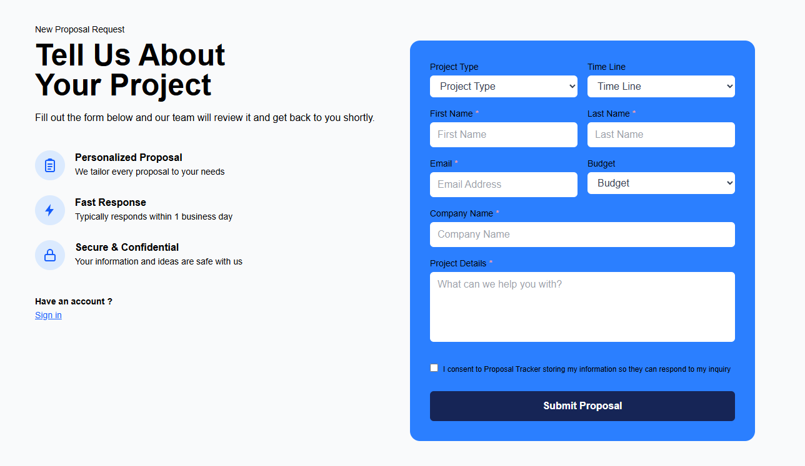
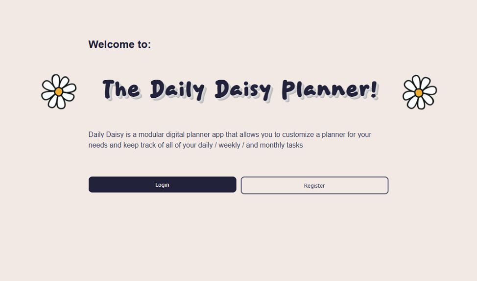
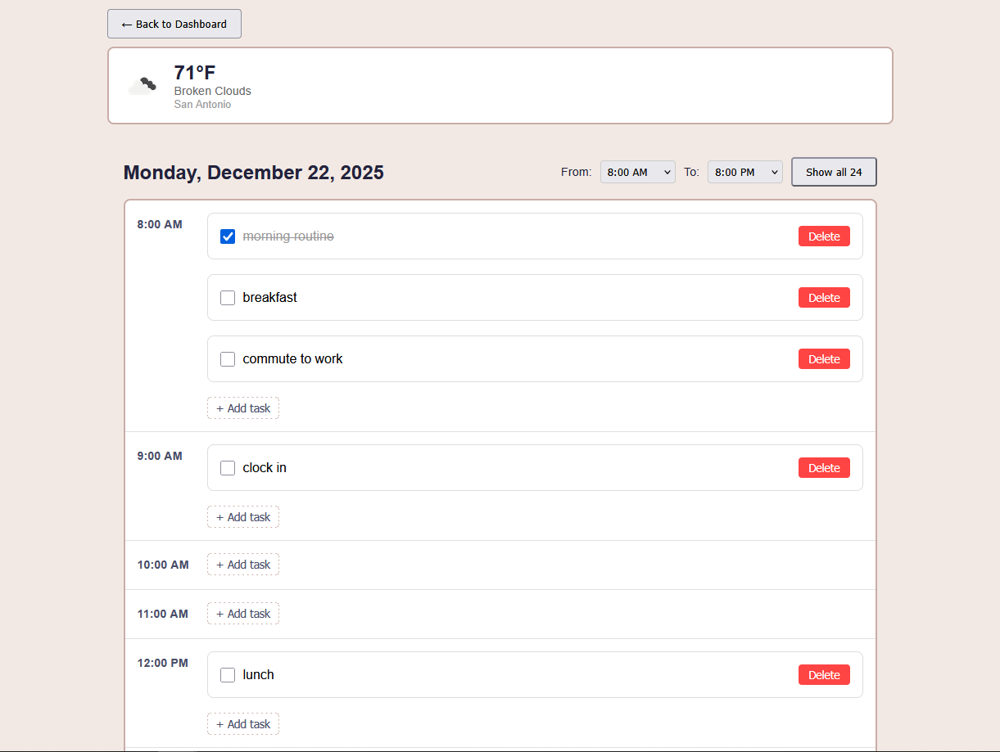
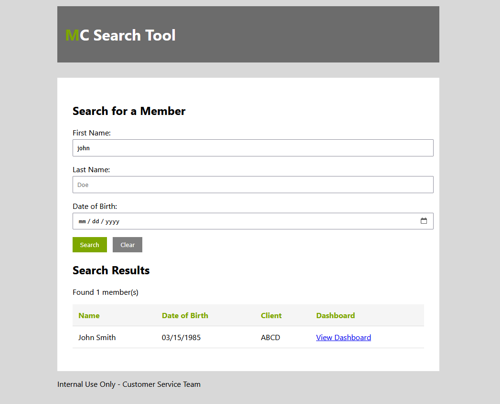
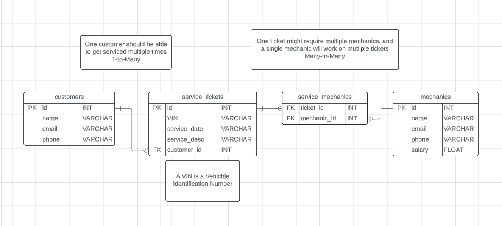

Proposal Tracker

A collaborative internal tool built with a small team of fellow bootcamp alumni now working together as a freelance collective. It captures inbound project inquiries, generates branded PDF proposals, and tracks won deals on a kanban board. Backend is Flask, chosen deliberately over a full Next.js stack so the team's learning time goes toward the frontend instead of splitting focus on a deadline project.
Technologies Used:
- TypeScript & Next.js
- Python & Flask
Field Service Work-Order App - Software Engineering Residency
As Frontend Lead on a cross-functional team, I helped build a cross-platform mobile app for managing field-service work orders, delivered for an enterprise client during a 10-week residency. The app replaced paper-based processes with a single in-app workflow: field workers receive, complete, and submit work orders, even with no connection, syncing automatically once they're back online. I also worked on GPS features for distance tracking and geofencing to confirm workers were on-site.
Technologies Used:
- TypeScript & React Native + Expo
- Offline-first architecture
- GPS and Geofencing
Built under NDA for an enterprise client - code and demo are not publicly available.
Daily Daisy Planner


I wanted a planner that felt personal, so I built in daily, weekly, and monthly views alongside real-time weather so your layout matches your day.
Technologies Used:
- JavaScript & React
- Python & Flask
- SQLite & SQLAlchemy
- JWT Authentication
- OpenWeather API
MC Search Tool

In healthcare customer service, every second spent hunting for a member's record is a second not spent helping them. I built this tool to eliminate that friction and allow CS teams a fast, unified way to find members across multiple client organizations without jumping between systems.
Technologies Used:
- Python & Flask
- SQLite & SQLAlchemy
- HTML & CSS
Mechanic Shop API

A RESTful API for managing automotive repair shop operations including customers, mechanics, vehicles, and services tickets. Features a normalized PostgreSQL database, comprehensive CRUD operations, and automated testing with CI/CD pipeline.
Technologies Used:
- Python & Flask
- PostgreSQL & SQLAlchemy
- React Frontend
- Pytest & GitHub Actions